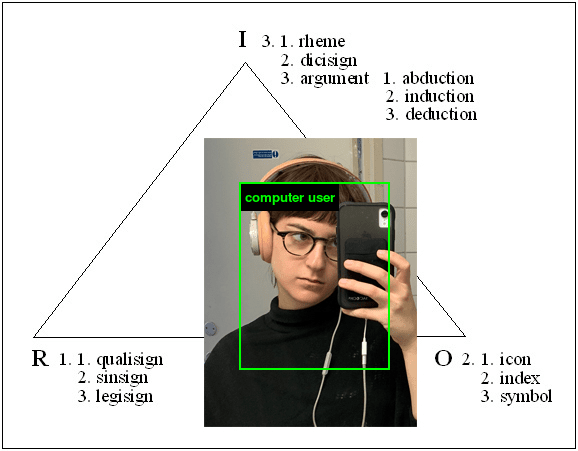

Meet the Students
We’re excited to announce the third cohort of Code Societies Winter 2020, a 3-week session, and welcome them into our community.
This year's sessions will be taught by
Allison Parrish,
American Artist,
Dan Taeyoung,
Emma Rae Norton (Assistant Organizer),
Everest Pipkin,
FlucT,
Harlo Holmes,
Kameelah Janan Rasheed,
Melanie Hoff (Lead Organizer),
Neta Bomani (Assistant Organizer),
Ruha Benjamin,
Simone Browne, and
Taeyoon Choi (Session Advisor)
Read a little bit about each of the students below. You can meet them in person at our final showcase on January 26th. Stay tuned on Twitter for announcements, or sign up for our newsletter for updates.
Adina Glickstein
Adina Glickstein is a New York-based writer, editor, and filmmaker. The through-line uniting these different spheres in Adina's work is an interest in the relationship between art and labor, which they approach via a variety of both practice and research-led projects including experimental analog filmmaking, academic writing, media archiving, arts criticism, and 35mm photography.
Alonso Castro
I am a designer, artist, technologist and teacher working on concepts that question how society confronts critical problems related to climate change and immigration; and how they all intersect with education, agriculture and the future of food.
Amber Officer-Narvasa

Amber Officer-Narvasa is a Sagittarius, a writer and an artist based in New York. Amber’s words have appeared or are forthcoming in the Columbia Journal of Literary Criticism, Arts.Black, The Brooklyn Rail, Entropy Magazine, The Nation (StudentNation), and Recompiler Mag.
Andreas Jonathan

I'm a writer and current MS. in Library & Information Science candidate based in Brooklyn, NY. I'm broadly interested in speculative fiction, data agency, & constructions of race, gender, territory, embodiment, justice and liberative futures in and around technology.
César Neri

César is a designer playing somewhere at the intersection of architecture, interaction design, and creative development. His personal work is interested in exploring the role of design and technology in the pursuit of decolonizing collective memory and identity in contemporary Latinx culture. Specifically focusing on living Maya cosmologies and ontologies as a way to catalyze resilience and remediation across different communities.
Char Jeré

Char Jeré is an Afro-Fractalist who fights for the liberation of all oppressed people. Char is currently reading and will always be reading these four important books at the same time, in no particular order, Artificial Unintelligence by Meredith Broussard, Race After Technology by Ruha Benjamin, Emergent Strategies: Shaping The Change, Changing The World by Adrienne Maree Brown and This Bridge Called My Back: Writings By Radical Women of Color by Cherrie Moraga(editor) and Gloria Anzaldúa(editor).
Char Stiles
Char Stiles is a multidisciplinary digital artist. Using computational systems and algorithms they are producing pieces that spans disciplines such as video, dance, interactive installation, performance and online works. Though, these days they are thinking about email protocol a lot. Their portfolio is online at www.charstiles.com.
Christina Entcheva

Christina is a SJW software engineer, code mentor, former product manager and designer, internationally exhibited artist, lil baby musician, and salad enthusiast.
Cy X

Cy X is a black queer multidisciplinary artist based in Brooklyn, NY. They are currently a MPS candidate at The Interactive Telecommunications Program, New York University Tisch School of the Arts. Cy is interested in exploring black queer futures and abolitionist possibilities through emerging technology, immersive environments, and performances.
Eliseo Rivera
Eliseo Rivera is an artist, educator, and technologist thinking about how time, memory, heritage, and relationships intersect and shape identity and culture. While working with his students — it’s relationship before content.
Elizabeth Perez

Elizabeth is a connector and guide native to New York City. She is interested in co-existence of humans and technology, and how technology can better support people during transformative life experiences such as pregnancy and birth. Elizabeth studied Sociology at Pomona College and is currently a graduate student at NYU's Interactive Telecommunications Program.
Holly Meadows-Smith

Holly is a person working disjointly in tech and publishing - selling data software by day and making zines by night. As an "artist," her work explores online culture and internet phenomena. Originally from England, she spent many years in the East Bay before ending up in New York in 2017.
Ladipo Famodu

Ladipo Famodu is a researcher, artist, and futurist based in Chicago. He embraces opportunities for experimental learning and believes in the power of imagination. His developing practice Astro Afro Studio seeks to address the present and future threats to social equality and environmental sustainability by weaponizing art, design, and technology in a creative, subversive manner.
Lina Chang

Lina Chang is a phonographer that observes the way information is stored and retained in the form of traces. Working with the process of pulp making and radio wave frequencies – self-recording machines are created in which memory is carved and inscribed.
key words: radio waves, specter, ubiquity, embed, trace, pulp
Mehrnaz Rohbakhsh

Mehrnaz Rohbakhsh is an interdisciplinary artist and educator based between Toronto and Tehran, focusing upon visual art, writing and sound. She holds a BFA from OCAD University in Drawing and Painting, and a MFA from the John H. Daniels Faculty of Architecture, Landscape and Design at the University of Toronto. Rohbakhsh has exhibited her work in Canada, the US, Italy, and Japan.
Shea Fitzpatrick

Shea Fitzpatrick is a designer who sometimes makes comics, music, essays, websites, jewelry, drawings, and gifs. Shea lives and learns with others in Brooklyn.
Sophie Kovel
Sophie Kovel is an artist, writer, and translator based in New York. Her work focuses on climate barbarism, psychoanalysis, and imaging trauma. She is an Editorial Assistant at BOMB Magazine and her writing has appeared in Artforum, frieze, the Brooklyn Rail, and elsewhere.
Tina Nguyen

Tina is a digital product designer, and currently lives in Brooklyn. She’s interested in having conversations about identity, psychology, spirituality, and technology. She also likes to hear your perspective on modern working culture, your favorite things to do on the internet, your personal values, and the recent concerts/movies you've seen. ☯️